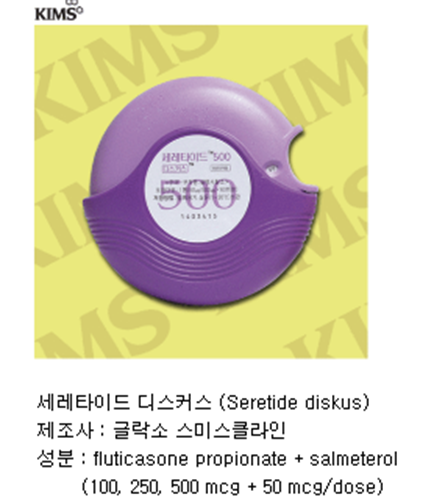

Back
1. 기계환기재시작기준
호흡피로증후가 보일때
RR이 10회이상 증가하거나 RR>30
sys BP가 20이상 dia.BP가 10이상 변화있을때
PaO2 <60 mmHg PaCO2 >55mmHg
pH < 7.35
Tidal volume <250-300ml or 5ml/kg
호흡피로증후가 보일때
RR이 10회이상 증가하거나 RR>30
sys BP가 20이상 dia.BP가 10이상 변화있을때
PaO2 <60 mmHg PaCO2 >55mmHg
pH < 7.35
Tidal volume <250-300ml or 5ml/kg
FiO2(trial and error approach)로 initial setting
FiO2> 90% (24시간 이내유지
FiO2 60-90% (2일-3일이내 유지)
FIO2 0.5 이하면 (수주간 안정하다)
산소독성 :Tracheobronchitis, parenchymal injury(ARDS 와 비슷한 양상)
* 주의: 저산소증이 hyperoxia 보다 나쁘다!!!
| Midazolam | Lorazepam | diazepam | |
|---|---|---|---|
| 로딩 | 0.02-0.1mg/kg | 0.02-0.06mg/kg | 0.05-02mg/kg |
| Onset | 1-5분 | 약10분 | 2-5분 |
| Duration | 1-2시간 | 2-6시간 | 2-4시간 |
| Maintainance | 0.04-0.2mg/kg/hr | 0.01-0.1 | 잘안한다 |
| GFR <10ml/min | 50%감량 | 감량안함 | 감량안함 |
의식이 있고 호흡할 힘이 있어야 함.
호흡부전이 온 원인이 해결이 되는 상태여야하고
PEEP < 8cmH2O 그리고 FiO2< 50%
혈역학적으로 안정적이어야 한다.
* 이외 목을 가눌수 있는 능력도 지표로 삼기도 한다.
mode : AC 모드
TV : 4~6mg/kg * predicted body wt.
Plateau Pr. <30cmH2O
호흡수 6-35/min 로 pH goal 7.3-7.45
SaO2 goal 55-88mmHg
SpO2 goal 88-95%
FiO2에 따른 기대 PEEP값
| FiO2 | 0.3 | 0.4 | 0.4 | 0.5 | 0.5 | 0.6 | 0.7 |
| PEEP | 5 | 5 | 8 | 8 | 10 | 10 | 10 |
| 성별 | |
| 키 | |
|
Predicted body wt
|
CVP8-12mmHG
MAP 65이상
소변량 시간당 0.5ml 이상
SVC O2 sat. > 70% 이상
iNITIAL SETTING 법
1) TV : 8-12ml/kg
2) Freq : 10-16
3) mode : CMV/AC/SIMV
4) FiO2 0.5-1.0
dopamin 800mg/dw 500ml
| dose(ug/kg/min)\체중(ideal body weight) | 40 | 50 | 60 | 70 |
| 1 | 1.5 | 2 | 2.5 | 2.5 |
| 3 | 4.5 | 5.5 | 7 | 8 |
| 5 | 7.5 | 9.5 | 11 | 13 |
| 10 | 15 | 19 | 22 | 26 |
용량과 효능
| dose(ug/kg/min) | 효능 |
| 1~3 | renal dosse : splanchnic vasodilatation |
| 2~8 | beta-1 receptor 항진 + inotropic effect |
| 7~10 | alpha receptor 항진 + SVR 상승 |
250mg /250cc
| dose(ug/kg/min)\체중(ideal body weight) | 40 | 50 | 60 | 70 |
| 2.5 | 6 | 8 | 9 | 11 |
| 5 | 12 | 15 | 18 | 21 |
| 7.5 | 18 | 23 | 27 | 32 |
| 10 | 24 | 30 | 36 | 42 |
용량과 효능
| dose(ug/kg/min) | 효능 |
| 2.5~15mcg/kg/min | beta1 -> beta2 -> a-receptor agonist 순으로 항진되며 inotropic effect + SVR낮춤 + Tachycardia |
250cc 5dw+ 60mg NE
| ug/min | infusion rate |
| 2 | 0.5 |
| 4 | 1 |
| 6 | 1.5 |
| 8 | 2 |
| 10 | 2.5 |
| 12 | 3 |
250cc 5dw+ 60mg NE
| 수치 | 점수 | |
| Plt. | >100k | 0 |
| 50-100k | 1 | |
| <50k | 2 |
| 수치 | 점수 | |
| FDP | no increased | 0 |
| moderate increased | 1 | |
| strong increased | 2 |
| 수치 | 점수 | |
| Prolonged PT | <3sec | 0 |
| 3-6sec | 1 | |
| >6sec | 2 |
| 수치 | 점수 | |
| Fibrinogen level | >1.0g/dl | 0 |
| <1.0g/dl | 1 |
Overt DIC의 기준은 수치의 합이 5이상
| 약품명 | Pregnancy | lactation |
|---|---|---|
| acetaminophen | category B | 가능 |
| acyclovir | Category B(상대적으로 안전함) | 가능 |
| adenosine | Category C | 가능 |
| albuterol | Category C | 가능할 것으로 사료 |
| alteplase | category C(위험성 알려지지 않음) | 위험성 알려지지 않음 |
| amantadine | Category C(위험성있음) | 안전성이 알려지지 않음 |
| amiodarone | Category D | 쓰면 안됨 |
| amioglycoside | Category D | 가능 |
| amlodipine | category C | 안전성이 알려지지 않음 |
| amoxicillin-clavuranate | category B | 가능 |
| ampicillin | category B | 가능 |
| atenolol | Category D | 독성이 있을 것으로 사료 |
| azithromycin | category B | 가능 |
| Carbamazepine | Category D | 가능할 것으로 사료 |
| cefaclor | category B | 가능 |
| cefadroxil | category B | 가능 |
| cefazolin | category B | 가능 |
| cefdinil | category B | 가능할 것으로 사료 |
| cefotaxime | category B | 가능할 것으로 사료 |
| cefoxitin | category B | 가능 |
| cefpodoxime | category B | 가능할 것으로 사료 |
| cefprozil | category B | 가능 |
| ceftazidime | category B | 가능할 것으로 사료 |
| ceftriaxone | category B | 가능할 것으로 사료 |
| cefuroxime | category B | 가능 |
| cetrizine | Category B | 안전성이 알려지지 않음 |
| chloramphenicol | Category C(gray baby syndrome 유발가능) | 쓰면 안됨(gray baby syndrome) |
| chlorpheniramine | Category C | 사용을 권장하지않음 |
| cimetidine | Category B | 가능 |
| clarithromycin | category C | 가능할 것으로 사료되나 증거 불충분 |
| clindamycin | category B | 가능(but 주의 : 설사나 혈변) |
| clonidine | Category C(주의 요함) | 안전성이 알려지지 않음 |
| clotrimazole | category C(안전할 것으로 생각됨) | 안전성이 알려지지 않음 |
| codein | category C(단기는 안전 term 에서는 안전하지않음) | 2일이상 이면 금기 |
| deferoxamine | category C(위험성 알려지지 않음) | 데이터없음 가능할것으로 사료 |
| digoxin | Category C(임신3기에는 주의해야함) | 가능 |
| diltiazem | category C(증거는 부족하나 안전하게쓰여짐) | 가능할 것으로 사료 |
| diphenhydramine | Category B | 사용을 권장하지않음 |
| dolasetron | Category B | 가능할 것으로 사료 |
| doxycycline | Category D | 쓰면 안됨 |
| epinephrine | Category C | 가능할 것으로 사료 |
| erythromycin | category B | 가능 |
| esmolol | Category C(주의 요함) | 안전성이 알려지지 않음 |
| esmoprazole | Category B | 안전성이 알려지지 않음 |
| ethambutol | category C(상대적으로 안전) | 가능할 것으로 사료 |
| etomidate | Category C(안전성이 알려지지 않음) | 데이터 불충분 |
| famciclovir | Category B 안전성이 알려지지 않음 | 사용을 권장하지않음 |
| Famotidine | Category B | 가능할 것으로 사료 |
| fentanyl | category C(단기는 안전 term 에서는 안전하지않음) | 가능 |
| fexofenadine | Category C 안전성 알려지지 않음 | 가능 |
| flecainide | Category C | 가능할 것으로 사료 |
| fluconazole | Category D | 가능할 것으로 사료 |
| furosemide | Category C(주의 요함) | 주의를 요함 |
| Glipizide | Category C | 주의를 요함 |
| Gluburide | Category C | 주의를 요함 |
| granisetron | Category B | 가능할 것으로 사료 |
| heparin | category B | 가능 |
| hydralazine | category C(안전할 것으로 사료) | 가능 |
| hydrochlorthazide | Category C(주의 요함 gestational HTN 에 쓰지마세요) | 주의를 요함 |
| hydrocodone | category C(단기는 안전 term 에서는 안전하지않음) | 가능할 것으로 사료 |
| hydromorphone | category C(단기는 안전 term 에서는 안전하지않음) | 가능할 것으로 사료 |
| hydroxyzine | Category C 안전성 알려지지 않음 | 사용을 권장하지않음 |
| ibutilide | Category C(동물에서 유해함) | 쓰면 안됨 |
| Insulin | Category B | 가능 |
| Ipratropium | Category B | 안전성이 알려지지 않음 |
| isoniazid | category C(상대적으로 안전) | 가능할 것으로 사료 |
| ketamine | category B(분만 근처에서 고용량이면 risk 있음) | 데이터 불충분 |
| ketoconazole | category C(증거는 불충분함) | 안전성이 알려지지 않음 |
| labetalol | Category C(안전할것으로 사료) | 가능할 것으로 사료 |
| lamotrigine | Category C | 안전성이 알려지지 않음 |
| lansoprazole | Category B | 안전성이 알려지지 않음 |
| levetiracetam | Category C(data가 제한적) | 안전성이 알려지지 않음 |
| Levothyroxine | Category B | 가능 |
| lidocaine | category B | 가능할 것으로 사료 |
| linezolid | category C(동물에서의 위험은 알려짐) | 안전성이 알려지지 않음 |
| LMWH | category B | 가능 |
| loratadine | Category B | 가능 |
| lorazepam | category D(단기사용은 안전하나 만성적인 사용은 안전하지않음) | 데이터 불충분(독성있을것으로 생각됨) |
| meclizine | Category B | 가능할 것으로 사료 |
| meperidine | category C(단기는 안전 term 에서는 안전하지않음) | 쓰면 안됨 |
| Metformin | Category C | 주의를 요함 |
| methadone | category C(단기는 안전 term 에서는 안전하지않음) | 가능 |
| methimazole | 태아에 유해함 | 가능 |
| methyldopa | category B | 가능 |
| methylprednisolone | category C(short term 은 안전함) | 가능 |
| metoclopramide | Category B | 독성이 있을수 있음 |
| metoprolol | Category D | 독성이 있을 것으로 사료 |
| metronidazole | category B(임신1기 금기 2,3기에는 안전) | 쓰면 안됨 |
| midazolam | category D(단기사용은 안전하나 만성적인 사용은 안전하지않음) | 데이터 불충분(독성있을것으로 생각됨) |
| morphine | category C(단기는 안전 term 에서는 안전하지않음) | 가능 |
| N-acetylcystein antidote | category B | 가능 |
| nafcillin | category B | 가능 |
| naloxone | category C(위험성 알려지지 않음) | 위험성 알려지지 않음 |
| nicardipine | Category C(주의 요함) | 안전성이 알려지지 않음 |
| nifedipine | category C(증거는 부족하나 안전하게쓰여짐 설하정은 금기임) | 가능할 것으로 사료 |
| nitrofurantoin | category B(임신 3기에는 hemolytic anemia 로 금기) | 가능할 것으로 사료 |
| nitroglycerin | category C(안전할 것으로 사료) | 가능할 것으로 사료 |
| nitroprusside | Category C(주의 요함) | 독성이 있음 |
| nizatidine | Category B | 가능할 것으로 사료 |
| NSAIDs | Category D(임신 3기에는 PDA로 금기) | 가능 |
| nystatin | category C(안전할 것으로 생각됨) | 안전성이 알려지지 않음 |
| omeprazole | Category C | 안전성이 알려지지 않음 |
| ondansetron | Category B | 가능할 것으로 사료 |
| oseltamivir | Category C(데이터 불충분) | 안전성이 알려지지 않음 |
| oxacillin | category B | 가능 |
| oxycodone | category C(단기는 안전 term 에서는 안전하지않음) | 가능할 것으로 사료 |
| pantoprazole | Category B | 안전성이 알려지지 않음 |
| penicillin G | category B | 가능 |
| phenobarbital | Category D | 쓰면 안됨 |
| phenytoin | Category D | 가능 |
| piperacillin-tazobactam | category B | 가능할 것으로 사료 |
| pralidoxime | Category C(안전성이 알려져있지않음) | 안전성이 알려지지 않음 |
| prednisolone | category C(short term 은 안전함) | 가능 |
| prednisone | category C(short term 은 안전함) | 가능 |
| procainamide | Category C(기형 유발하지않으나 lupus-like reaction 과관련있음) | 가능 |
| prochlorperazine | Category C | 독성이 있을수 있음 |
| promethazine | Category C | 권장하지않음 |
| propofol | category B(neonatal depression 가능성있음) | 데이터 불충분 |
| propranolol | Category C(주의 요함) | 가능할 것으로 사료 |
| Propylthiouracil | Category D | 가능 |
| pseudoephedrine | Category C(사용을 권장하지않음) | 가능할 것으로 사료 |
| pyridoxine antidote | category B | 가능 |
| quinidine | Category C | 가능 |
| ranitidine | Category B | 가능할 것으로 사료 |
| reteplase | category C(위험성 알려지지 않음) | 위험성 알려지지 않음 |
| rifampin | category C(상대적으로 안전) | 가능할 것으로 사료 |
| rocuronium | category C(분만 근처에서 사용하면 위험) | 안전성이 알려지지 않음 |
| salicylate | Category D | 금기 reye's syndrome |
| sotalol | category B | 가능할 것으로 사료 |
| streptokinase | category C(위험성 알려지지 않음) | 위험성 알려지지 않음 |
| succimer antidote | Category C(안전성이 알려져있지않음 동물에선 기형형성) | 안전성이 알려지지 않음 |
| succinylcholine | category C(분만 근처에서 사용하면 위험) | 안전성이 알려지지 않음 |
| sulfonamide | category C(near-term 에서는 금기 kernicterus in newborn) | 가능할것으로 사료되나 preterm 이나 G6PD 결핍증이나 고빌리루빈혈증에서는 금기 |
| Sulfonylurea | 데이터부족 태아의 저혈당에 주의 | 저혈당에 주의 |
| terbinafine | category B | 안전성이 알려지지 않음 |
| terbutarine | Category B | 가능할 것으로 사료 |
| tetracyclin | Category D | 가능할 것으로 사료 |
| ticarcillin | category B | 가능할 것으로 사료 |
| topiramate | Category C | 안전성이 알려지지 않음 |
| urokinase | category C(위험성 알려지지 않음) | 위험성 알려지지 않음 |
| valacyclovir | Category B (상대적으로 안전함) | 가능 |
| valproic acid | Category D | 가능할 것으로 사료 |
| vancomycin | category C(증거는 불충분함) | 안전성이 알려지지 않음 |
| vecruonium | category C(분만 근처에서 사용하면 위험) | 안전성이 알려지지 않음 |
| verapamil | category C(증거는 부족하나 안전하게쓰여짐) | 가능할 것으로 사료 |
| warfarin | category X | 가능 |
| 질환명 | 의심균주 | drug of choice | alternative |
|---|---|---|---|
| Pharyngitis | Group A streptococci | Penicillin | macrolide |
| bronchitis,otitis,acute sinusitis | S.pneumoniae, H. influenza | Amoxicillin, amox/clav or cefuroxime | macrolide or doxycycline |
| Epiglottitis | H.influenzae, Group A streptococci | ceftriaxone | cefuroxime |
| community-acquired pneumonia | S.penumoniae,virus, mycoplasma | azithromycin | levofloxacin |
| aspiration pneumonia | aerobes and anaerobes | clindamycin | pip/TZ, ceftriaoxne + Metronidazole |
| UTI | E.coli and enteric G(-) rod | TMP/SMX | Cirpofloxacin |
| Urethritis | N.gonorrhea, chlamydia | Ceftriaxone | Cirpofloxacin |
| genital ulcers | T.pallium, HSV | Penicillin G | doxycycline |
| cellulitis | Group A streptococcim staphylococcus aureus | cephalexin | dicloxacillin,clindamycin |
| necrotizing fascitis | polymicrobial | imepenem or meropenem plus vancomycin | X |
| Cat bite | Posteurella, mixed flora | amox/clav | clindamycin and ciprofloxacin |
| Meningitis(normal host) | S.pneumonia, N.meningitidis,S.aureus | Ceftriaxone+ vanco | |
| Meningitis(Immunocompromised) or >50 | Listeria, H.influenza | ceftriaxone+ vanco + ampicillin | |
normal : <50mosm/kg/h2o
증가하는 경우 osmotic diarrhea : 금식시 호전
normal 인경우 secretory diarrhea
| stool Na(mEq/L) | |
| stool K(mEq/L) | |
| Serum osm(mosm/kg) | |
| No/Low NSAID | NSAIDs GI risk | ||
| No CV risk | 그냥쓴다 | cerecoxib | |
| NSAIDs+PPI | |||
| CV risk (+) | NSAIDs+ PPI | NSAIDs+PPI | |
| NSAIDs+misoprostol | |||
| 재출혈율 | ||
| Ia | spurting hemorrhage | 80-100 |
| Ib | Oozing hemorrhage | 75-85 |
| Iia | Visible vessel | 50 |
| Iib | Adherent clot | 23-30 |
| Iic | Hematin on ulcer base | 5 |
| III | Lesion without sign of recent hemorrhage |
** Iia 까지는 ICU 1일 이상 입실시킨다!!
| UC | CD | |
| smoking | maybe protect | 질환유발 |
| 남녀비 | 1대1 | 1.1-1.8:1 M:F |
| oral contraceptive | risk 올리지않음 | Odd ratio 1.4 |
| Appendectomy | Protective | not protective |
| pANCA | 60-70%양성 | 5-10% 양성 |
| ASCA | 10% 양성 | 60-70% 양성 |
| 침범 | rectum 침범 | rectal sparing |
| cobble stone | no | yes |
| 양상 | continous lesion | longitudinal ulcer aphthous ulcer skipped lesion |
| serum albumin | |
| serum bilirubin | |
PT INR PT prolongation |
|
| 복수 | |
| encephalopathy | |
|
합산점수:
|
|
| CTP class | 점수 | 수술사망률 |
| A | 5 ~ 6 | 0 ~ 5 |
| B | 7 ~ 9 | 5 ~ 15 |
| C | 10 ~ 15 | 24%이상 |
| 빌리루빈 | |
| 크레아티닌 | |
| INR | |
| 원인 | |
| Na+ | |
|
MELD :
MELD-NA : |
|
| 점수 | 입원한 LC환자의 3개월 사먕률(%) |
| 0 ~ 9 | 4% |
| 10 ~ 19 | 27% |
| 20 ~ 29 | 76% |
| 30 ~ 39 | 83% |
| 40이상 | 100% |
Ranson criteria(이중 3개항목이상이면 severe pancreatitis
| 입원 및 진단당시 | 48시간이후 |
| Age> 55 | Hct 10%이상감소 |
| WBC> 16000/uL | 수분결핍 6L이상 |
| glucose >200mg/dl | 칼슘 < 8mg/dl |
| L DH > 400IU/L | PaO2 < 60mmHg |
| AST > 250IU/L | BUN 수액투여후에도 5이상증가 |
| Base deficit > 4mmol/L |
| CT severity index | Necrosis index | |
| A: 정상 | 괴사없음 | 0점 |
| B : 췌장의 국소 미만성 비대와 부종 | 췌장 1/3미만의 괴사 | 2점 |
| C: B+ 췌장 및 주위염증 | 췌장 1/3~1/2의 괴사 | 4점 |
| D: C+ single fluid collection | 췌장 1/2 이상의 괴사 | 6점 |
| E: C+ 2개 이상의 fluid collection or 췌장내 gas |
| ANA or SMA | 1:40 이상 | 1 |
| or LKM | 1:40이상 | 2 |
| or SLA | 양성 | 2 |
| IgG | >upper normal limit | 2 |
| >UNL의 1:1배이상 | 1 | |
| Liver histology | Compatible with AIH | 1 |
| Typical AIH | 2 | |
| Absence of viral hepatitis | 2 | |
6점은 probable AIH 7점이상은 definite AIH |
||
치료의 적응증
Absolute Ix
1. AST가 UNL 10배이상
2. AST가 UNL의 5배이상 이면서 gamma-globulin level 정상의 2배
3. Bridging necrosis or multiacinar necrosis on histologic exam
Relative Ix
1. 증상이 있는 경우
2. AST and/or gamma-globulin less than absolute criteria
3. interface hepatitis
| 병합요법 | |||
| 성인의 Tx Regimen | PDL단독 | P D L (mg/d) | Azathioprine(mg/d) |
| 1주차 | 60mg/d | 30 | 50 |
| 2주차 | 40mg/d | 20 | 50 |
| 3주차 | 30mg/d | 15 | 50 |
| 4주차 | 30mg/d | 15 | 50 |
| maintainance until endpoint | 20mg/d | 10 | 50 |
ICG R15
| 10% 이하 | 안전한 간절제 가능 |
| 20-30% | 구역절제 가능 |
| 30-40% | 부분절제 가능 |
| 40% 이상 | 간절제 금지 |
ICG Rmax(3.4mg/kg/min 이상이면 정상)
단위 mg/kg/min
| 1이상 | 안전한 절제가능 |
| 0.8 ~ 1 | 간엽절제 가능 |
| 0.4 ~ 0.8 | 구역절제 가능 |
| 0.2이하 | 금지 |
| 1 | 악물 복용 ~ 증상까지의 시간 | |
| 2 | 약물중단후 경과 | |
| 3 | 위험인자 | |
| 4 | 동반약물 투여 | |
| 5 | 약물이외의 원인 (항목 바이러스성간염 1),2),3)A,B,C) 4) 담도폐쇄 5) 알코올중독 6) 최근저혈압 7)CMV EBV HSV |
|
| 6 | 간독성에 대한 기록 | |
| 7 | 재투여시의 반응 |
high probable (9점이상)
probable (6~8점)
Possible (3~5점)
unlikely(1~2점)
Excluded (0점)
| 관장법 | 설명 |
| Lactulose enema : | Lactulose 간성혼수시 주로 씀 |
| Kalimate enema | 300cc lactulose + 700cc(N/S)을 섞어 10-15분 retension enema |
| Glycerin enema | 장의 연동운동촉진 미지근한 물과 25cc+25cc로 mix 하여 주입 |
| Fleet enema | 압축병이 나와있어 섞을 필요없이 즉시 사용 Na 증가 인산염농도의 상승과 칼슘농도의 감소에 주의!!! |
온도는 40'c 근처 관의 굵기는 성인 22-30Fr. 삽입길이 7.5~10cm
| 1 | 간의 크기의 50% 이상 |
|
| 2 | 복수의 존재 | |
| 3 | bilirubin>3 | |
| 4 | Albumin<3 |
원격전이 혈관침범이 없는 5cm 이하의 단일 종양 or 3cm이하의 다발성(3개이하) 의종양
** 확대된 개념으로는 6.5cm 이하의 단일 동양 or 4.5cm 미만의 다발종양(3개이하) 종양(직경합 8cm 이하)
| Bilirubin(mg/dl) | |
| PT(s) | |
| PT control(s) | |
|
32점을 초과한다면 alcoholic hepatitis에서 PDL사용을 고려하라 solondo 40mg for 28일! 사용고려 |
| I | HF의 sign 없음 |
| II | Rales or Crackles in the lungs, S3, and elevated JVP |
| III | Frank Acute Pulmonary edema |
| IV | Cardiogenic shock or hypotension(SBP <90mmHg 이하) Evidence of peripheral vasoconstriction |
Calcium gluconate 10% 10mg iv over 3min (5분후에 반복가능) 20-30분효과있음. Bicarbonate와 같이 주지 마세요
10U RI + 20% DW 500cc에 mix하여 1시간동안 infusion
Kalimate PO or Retension enema : 30-50g +5dw 100-200cc
호흡기 위험인자 상정 12개
1.URI(기침,호흡곤란)
2.나이 >60
3.COPD환자
4.American society of Anesthesiologist class 2이상
5.Functionally dependent
6.CHF
7. Albumin <3.5g/dl
8 FEV1 <2L
9. MVV <50% of predicted
10. PEF< 100L or 50% of predicted value
11. PCO2 45mmHg이상
12. PO2 50mmHg 이하
| 1.Confusion | |
| 2. BUN 19이상 | |
| 3. RR 30이상 | |
| 4.BP 90/60 이하 | |
| 5. 나이 65세이상 | |
|
결과 :
사망률 : |
|
* From 대한호흡기학회진료지침
결핵의 초치료의 표준 처방은 2HERZ/4HER 이다 약제감수성이 확인되면 2개월 후부터는 에탐부톨의 중단을 고려한다.. 초치료환자에서 공동이 있고 치료2개월 이후에 객담배양이 양성이 경우 유지치료기간을 연장하는 것을 고려할수있음
Ref) 대한호흡기 학회 진료지침
참고 여기서
Short acting beta-2 agonist 대표 ventolin
LAMA : Spiriva, Atrovent
LABA : Serevent
LABA + ICS : Seretide
ICS단독 : Alvesco,pulmicort 등
| Short acting beta2 agonist의 대표 |
| 용법 : 숨찰때마다 수시로 한다 |
| ICS 약들 |
| alvesco 용법 : 성인기준 1일 1회 심하면 2회 후릭소타이드 용법 : 1일 2회 |
| LABA제제들 |
| 세레타이드 에보할러 : 1일 2회 |
| Short acting Beta2agonist + short acting anticholinergics |
| LABA+ICS |
| Diskus 및 터부할러 |
|  |
| Long acting anticholinergics |
| 기타 : 스피리바 |
| Na | mEq/L | |
| Cl | mEq/L | |
| HCO3 | mEq/L | |
| Albumin | g/dl | |
|
AG : Corr.AG : AG의 정상치는 8-16이다. AG의 증가는 Unmeasured anion 의 증가에 의해서이다 ketoacidosis 와 uremic acidosis, drug ingestion,lactic acidosis 등을 반영한다 |
||
| s Na | meq/L | |
| s Cr. | mg/dl | |
| U Na | meq/L | |
| U. Cr. | mg/dl | |
|
결과 :
의미 : FENa가 1% 미만이면 Prerenal Azotemia 를 시사한다! |
||
| Na | mEq/L | |
| BUN | mmol/L | |
| Glucose | mg/dl | |
| Measured Osm | mosm/kg | |
|
결과 :
의미 : 정상치는 10이하이다. 10이상일 경우 메탄올이나 에탄올 에틸렌글라이콜, 소르비톨이나 만니톨이 들어가있음을 의미한다 |
||
| 남자 | 60% |
| 여자 | 50% |
| ECF | 33% 이중 3/4가 간질액 1/4이 blood |
| ICF | 66% |
| 수액 | plasma volume expansion(1L 주입시) |
| 5DW | 83ml |
| N/S | 250ml |
| Half saline | 167ml |
| Colloid | 1000ml |
* 혈청 마그네슘이 1mEq/L 이하에 electrolyte 이상동반시 요법
1) 6g의 MgSO4를 250~500cc의 normal saline 에 mix 하여 3시간동안준다
2) 이어서 5g의 MgSO4를 250-500cc의 normal saline 에 mix 하여 6시간동안준다
3) 이어서 continous infusion! 5g MgSO4 + 250~500cc N/S mix 12시간마다~ 5일동안!
* Emergent infusion
1) 2g의 MgSO4 iv over 2-3분
2) 이어서 5g의 MgSO4를 250-500cc의 normal saline 에 mix 하여 6시간동안준다
3) 이어서 continous infusion! 5g MgSO4 + 250~500cc N/S mix 12시간마다~ 5일동안!
***Renal inpairment 시에는 주의해야됩니다!
증상이 있는 Hypocalcemia 는 iv 치료를 원칙으로 한다.
1) 10% Calcium chloride 의 약 8ml를 + Normal saline 에 mix 해서 10분간 투여Lasix 40-80mg every 2hr. : N/S을 함께 주는게 중요
Calcitonin : 4 Unit/kg IM or SC로 12시간마다 반복. 효과는 수시간안에 있으며 최대효과는 적다
hydrocortisone 200mg iv divided 2
Pamidronate 90mg iv over 2hour : 약 1주일 뒤에 효과있음
Zolendronate : 4mg iv over 15min. : 효과는 파미드로네이트와 비슷
적응증 1mg/dl 이하의 환자에서는 보충을 권유
Solution
Sodium Phosphorus
Potassium Phosphorus
** 0.6mg/kg 를 1시간동안 준다!!!!!!
6시간마다 추적후 Phosphorus 수치가 2가 넘으면 maintain 은 PO 로 할 수 있다
목적 ODS를 예방하기 위해
치료법
1)5dw LBW의 kg 당6cc를 2시간동안 정주한다
2)Therapeutic goal 까지 반복
3) Desmopressin 2mcg SC 6시간마다 반복 5DW를 stop 할때 까지 써준다
4) 2시간 마다 electrolyte추적한다
치료목표 : 1시간동안 Na+ level 을 1mEq/L 씩 낮춘다
하루에 correction 되는 정도를 10이하로 한다
<from Harrison's internal medicine>
<from Harrison's internal medicine>
<from Harrison's internal medicine>
<from Harrison's internal medicine>
<from Harrison's internal medicine>
<from Harrison's internal medicine>
<from Harrison's internal medicine>

<from Harrison's internal medicine>
1) 빠른 항생제 정주 (Emperical antibiotics)
2) Hemodynamic stability 유지
CVP 8-12cmH20 유지
PCWP 12-16mmHg유지
Urine output 0.5cc/min/kg 대략 시간당 30cc
MBP 65mmHg 이상유지
3) Volume trial 에 반응 없을시 vasopressor 사용 : NE 이 prior choidce 이다. Renal dose 의 dopamine 은 쓰지 않는다.
4) central venous oxygen sat. 70% 이상유지
5) Adrenal insufficiency 시에 hydrocortisone 50mg iv q6hr 시작한다
* Steroid 고려해야할 경우 : Refractory hypotension, fulminant N.meningitidis bacteremia, Prior steroid user, Disseaminated Tbc.(Miliary Tbc 에서 motality 개선효과는 없다)
6) Ventilator Therapy : low tidal volume 6ml/kg
7) pH <7.15 이하일시 bicarbonate therapy 고려한다.
Glucose target : 180이하
8) Hb 7-9g/dl 유지
다음 기준중 2개를 만족할때
1) fever : 38'c or hypothermia
2) Tachypnea >24/min or PaCO2 < 32mmHg
3) Tachycardia > 90 beat/min
4) Leukocytosis >12000/uL or < 4000/uL or > 10% band
Duke Criteria
Major criteria
1. Positive culture
1) 2개의 blood culture 에서 서로 특징적인 균주가 배양된 경우((viridans streptococci, Streptococcus gallolyticus, HACEK group, S.aureus, community acquired enterococci in the absence of a Primary focus)
2) Persistently Positive blood culture, defined as recovery of a microorganism consistent with infective endocarditis from;
Blood culture drawn > 12h apart; or all of 3 or a majority of ≥ 4 separated blood culture with 1st and last drawn at least 1h apart.
2. Evidence of endocardial involvement
1) Positive Echocardiography
| Oscillating inctracardiac mass on valve or supporting structurs or in the path of regulgitatant jets or in implanted material in the abscnce of an alternative anatomic explanation or |
| Abscess or |
| New partial dehiscence of prosthetic valve or |
| New valvular regulgitation |
Minor criteria
1. Predisposition : heart condition or injection drug use
2. Fever ≥ 38'C
3. Valvular phenomena : major arterial emboli, septic pulmonary infacts, mycotic aneurysms. Intracranial hemorrhage, conjuctival hemorrhage, Janeway lesions
4. Immunologic phenomenon : Glomerulonephritis, Osler's nodes, roth's spots, Rheumatic factor
5. Microbiologic evidence : Positive culture but not meeting major criteria as noted previously or serologic evidence of active infeciton with organism consistent with infective endocarditis
결론----
Definite : 2major or 1major +3minor or 5minor
Probable : 1 major +1 minor or 3minor
수술을 고려하는 경우!!!!
1) 판막기능 부전과 동반된 CHF
2) 불안정한 인공 심판막
3) 조절되지 않는 감염 ; 지속적인 균혈증, 진균성 심내막염
4) 인공심판막에서 적절한 치료에도 불구하고 재발하는 경우
1. 인공판막이나 인공물질이 판막치료에 쓰인경우
2. 과거에 IE를 앓은 경우
3. congenital HD.
1) 수술적으로 교정안되는 청색증형 선천심질환 또는 대증적은 션트나 conduits
2) 선천심질환 교정했으나 초기 6개월은 권장
3) Device나 prosthetic material 로 교정했으나 결손이 남은경우
4. 심장이식 + 심장판막병증이 남은경우
**참고 : MVP, Rheumatic heart disease, bicuspid valve disease, VSD, ASD HCMP등은 더 이상 고려대상이 아니다
예방이 필요한 Procedure 들은?
1. Dental procedure 구강점막을 침범하는 시술
2. 호흡기 점막을 침범하는 시술
* Endoscopy colonoscopy, cystoscopy 는 더 이상의 권장사항은 아니고 소변에 enterococci 과 colonization 된 경우 권장
* infected skin 을 조작하는 침습적인 시술에도 high risk pt. 에서 권장
Initial episode mild~modeate
→→ Metronidazole 500mg tid PO for 10-14days
Initial episode severe(WBC 15000 이상 or Cr. ≥ 1.5배 premorbid level
→→ Vancomycin 125mg qid for 10-14days
Initial Severe complicated(shock, ileus, megacolon 동반시)
→→ vancomycin 500mg qid PO(Per Levin tube) + Metronidazole iv 500mg tid.) Rectal vancomycin 투여 고려
첫번째 재발하더라도 치료가이드는 바뀌지 않는다
| Toxin Hx doses | Clean wound | Not clean wound | ||
| Td | TIG | Td | TIG | |
| Unknown<3 | YES | NO | YES | YES |
| ≥3 | NO | NO | NO | NO |
** Td는 immunization 을 모르거나 10년이 경과했을 경우 투여
Leptospirosis
Tx. : TC, doxycycline, ampicilline, amoxicillin PO
Pen-G, amoxicillin, ampicillin, erythromycin
화학적 예방은 : doxycycline 200mg PO 주1회
Scrub Typhus
TX: Doxycycline 100mg bid for 7-15days Azithromycin 500mg PO qd for 3days
Q fever
Tx : Doxycycline 100mg bid + hydroxychloroquine 200mg tid
Mycoplasma Pneumonia
Tx : 1) Azithromycin 500mg x1day PO -> Day2-5 250mg PO qd
2) Doxycycline 100mg bid for 10-14days
Norcadiosis
Tx : Sulfonamide for 6-12m
Actinomycosis
Tx : Penicillin 18-24백만 단위 daily for 2-6주간
N.meningitidis
Close contact 시
| 약 | 나이 | 사용법 |
| RFP | 1개월 이하 | kg당 5mg bid for 2days PO |
| 1개월 이상 | kg당 10mg bid for 2days PO | |
| 성인 | 600mg bid PO | |
| Azithromycin | 15세이하 | kg 당 10mg 1회 PO |
| 15세이상 | 500mg PO 1회 | |
| Ceftriaxone | 15세 이하 | 125mg IM 1회 |
| 15세 이상 | 250mg IM 1회 | |
| ciprofloxacin | 소아금기 | |
| 성인만 | 500mg PO 1회 |
from IDSA guideline
hydroxychloroquine sulfate 400 mg
hydroxychloroquine sulfate 총2 g을 3일에 나누어 줌(= chloroquine phosphate 총 25 mg base/kg를 3일에 나누어 줌)
시작 800 mg → 6, 24, 48시간 후 400 mg 복용
Primaquine phosphate 26.3 mg (= 15 mg base) po qd for 14 d(chloroquine 을 마치는 날로부터 시작)
1) IV dextrose : 20-50cc 의 50% dextrose
2) 이어서 5%~10% DW를 glucose 100 targer으로 정주한다.
3) Severe의 경우 glucacon 1mg IM or SC 권장(S/E 구토 : aspiration 주의)
1) Fluid therapy
Normal saline : full drop(1L) 이후 volume deficit 에 맞게 1L/hr infusion
* Na수치가 155이상이면 half saline 으로
=> Half saline 150-500cc/hr
2) Insulin therapy
Initially RI 10-15 unit IV bolous
N/S 150ml + RI 150U mix 5cc/hr속도 주입(50kg 기준) 0.1u/kg/hr
시간당 50-100의 glucose를 낮추는 것을 목표로 한다(너무빨리낮추면 osmotic encephalopathy)
Glucose level 이 250 까지 내려가면 G.I.K 를 시작한다
3) Potassium
K+ hyperkalemia 가 없다면 K 을 시간당 10-20mEq을 준다.
Hypokalemia 가 있으면 40mEq/hr 이상의 K+을 공급해야함
4) 모니터링
glucose level 1시간간격측정 electrolyte 1-2시간 간격으로 측정
ABGA는 필요시마다 시행
5) Bivon therapy
a) coma 나 shock pH <7.1 이하. Plasma bicarnobate 5mEq/L 이하일 경우
sodium bicarbonate 50-100eEq/L + 1L half saline + KCl 10-20eEq (500cc/hr)
| Antiinflammatory potency | Na+ retaining potency | Duration of action | Equivalent dose oral vs IV | |
| hydrocortisone | 1 | 1 | Short | 20 |
| solucortef | 0.8 | 0.8 | Short | 25 |
| Prednisone | 4 | 0.8 | Intermediate | 5 |
| Prednisolone | 5 | 0.8 | Intermediate | 5 |
| Triamcinolone | 5 | 0 | Intermediate | 4 |
| Dexamethasone | 25 | 0 | Long | 0.75 |
*Physiologic dose : Hydrocortisone 20mg Prednisone 5mg DEXA 0.75mg
| mild DKA | moderate DKA | Severe DKA | HHS | |
| plasma glucose | >250 | >250 | >250 | >600 |
| Effective Serum osm | 다양 | 다양 | 다양 | >320 |
| Urine or serum ketone | (+) | (+) | (+) | (-) to (+) |
| Arterial pH | 7.25~7.3 | 7.00~7.24 | <7.00 | >7.3 |
| Serum bicarbonate | 15-18 | 10~15 | <10 | >15 |
| Anion Gap | >10 | >12 | >12 | <12 |
| Typical mental status | Alert | Drowsy | Stupor 이상 | Stupor 이상 |
1. "CAPD2 balance1.5%(2L) 1 PK ×01,
+ Urokinase (10만IU)녹십자 1 VL
[Remark]
2시간동안 배안에 넣어 두세요"
2. "CAPD2 balance1.5%(2L) 1 PK ×01,
+ Fortum (1g) 1 G
+ Cefazolin (1g) 1 G
+ Heparin Sodium (25000IU) 2000 IU "
3. "Notice >>
3번 연달아 IRRIGATION 후 UK MIX 된 투석액 넣어 주세요. 2시간동안 배안에 넣어둔후 항생제 MIX 된 투석액 넣어주세요
4. "CAPD4 balance2.3%(2L) 1 PK IP
+ Fortum (1g) 0.25 G
+ Cefazolin (1g) 0.25 G
+ Heparin Sodium (25000IU) 2000 IU
[Remark]
* 배출 후 주입"(4시간 간격)
1) 시술전 12시간 전부터 normal saline or halfsaline 1cc/kg/hr시행후 12시간까지 수액을 주세요.2) 시술전 24시간 전부터 acetylcystein 1200mgbid 처방
Tygacil (tygecycline)
----------------------
1. "Tygacil (50mg) 50 MG IV q'12:00 10:00
+ 5% D/W (100ml) 100 ML
[Remark]
over 30 ~ 60 분"
----------------
Cefazolin
"Cefazolin (1g) 1 G IV q'08:00 3회
[Remark]
cefazolin"
Cefepime
"Maxipime (1g) 2 G IV q'08:00 3회
Cefotaxime
"Cefotaxime (2g)한미 2 G IV q'08:00 3회
[Remark]
cefotaxime"
Yamatetan
"Yamatetan (1g) 1 G IV q'12:00 2회
[Remark]
1-2G"
Ceftazidime
"Tazime (2g) 2 G IV q'08:00 3회
[Remark]
ceftazidime"
Ciprofloxacin
"Lopucin (200mg) 400 MG IV q'12:00 2회
Levofloxacin
"Cravit (750mg) 750 MG IV q'24:00 1회
[Remark]
levoflo"
Moxifloxacin
"Avelox (400mg) 400 MG IV q'24:00 16:00
Metronidazole
"Flagyl (500mg) 500 MG IV q'06:00 4회
[Remark]
7.5mg/kg metronidazole
Vancomycin
"VANCOCIN C.P (1g) 1 G IV q'12:00 2회
+ N/S-100 (100ml) 100 ML
[Remark]
vanco check TDM"
Tazobactam
"Tazocin (4.5g) 4.5 G IV q'06:00 4회
+ N/S-100 (100ml) 100 ML
Amikacin
"Amikin (250mg) 750 MG IV q'24:00 1회
+ N/S (150ml) 100 ML
[Remark]
amikacin 15mg/kg"
Isepacin
"Isepacin (200mg) 400 MG IV q'24:00 1회
+ N/S-100 (100ml) 100 ML
[Remark]
isepacin 8mg/kg"
Cilapenem.Meopenem
"Cilapenem (500mg)제일 1 VL IV q'06:00 4회
+ N/S-100 (100ml) 100 ML "
"Meropen (500mg) 1000 MG IV q'08:00 3회
+ N/S-100 (100ml) 100 ML
[Remark]
meropenem, N/S 100 mix"
Zyvox
"Zyvox (600mg/300ml) 600 MG IV q'12:00 2회
[Remark]
GFR 무관 용법동일"
Teicoplanin
"Teiconin (400mg)대웅 400 MG IV
+ N/S-100 (100ml) 100 ML "
Bactrim
1."Septrin 정 4 TA *04 PO
[Remark]
아침과 저녁에는 Prednisolone 먹고 나서 15분 뒤 복용
"Notice >>
***** bactrim for acute P. carinii infection **********
Bactrim 15-20mg/kg/day of Trimethoprime * 21days*
prednisolone 40mg bidx5days -> 40mg qdx5days*-> 20mg 1d
1. "Muteran (300mg) 11100 MG ×01,
+ 5% D/W (500ml) 200 ML
[Remark]
150mg/kg for 1 hour"
2. "Muteran (300mg) 3700 MG ×01,
+ 5% D/W (500ml) 500 ML
[Remark]
50mg/kg for 4hours"
3. "Muteran (300mg) 7400 MG ×01,
+ 5% D/W (500ml) 500 ML
[Remark]
50mg/kg for 16hours"
"Midazolam (5mg/5ml)[향정] 100 MG ×01, 5 CC/Hr
+ N/S (500ml) 250 ML "
"5% D/W (100ml) 100 ML ×01, 5 CC/Hr
+ Norcuron (4mg) 5 VL
[Remark]
maintenance dose: 1mcg/kg/min= 60mcg/kg/hr, 90kg =
> 5400mcg/hr = 5mg/hr (20mg/100cc = 1mg/5cc)"
"5% D/W (500ml) 250 ML ×01, 12 CC/Hr
+ Perdipine (10mg) 100 MG
[Remark]
0.28mg /ml 1ug/kg/min = 6ml=2.4mg 차광 line 까지"
---------------------------------------------------------
N/S (500ml) 500 ML <
+ Labesin (100mg) 500 MG <
[Remark]
SBP 150 이상시 3cc/hr 증량,SBP 130 이하시 3cc/hr 감량"
1.Cordarone (150mg) 1 AP IV
2."Cordarone (150mg) 3 AP ×01,
+ 5% D/W (500ml) 250 ML
[Remark]
34CC/HR (1mg/min) -> 6시간 뒤 17CC/HR (0.5mg/min)"
설명 :
LOADING : 150mg OVER 10min -> 1mg/hr FOR 5hrs
MAINTAINANCE : 450mg/250ml = 1.8mg/ml -> 0.5mg/hr (17CC/HR)"
"Lidocaine 2% (400mg) 60 MG IV
[Remark]
bolus 1-1.5mg/kg iv push response없으면0.5~0.75mg/kg iv push q 5min(max 3mg/kg)"
"Lidocaine 2% (400mg) 2000 MG ×01, 15 CC/Hr
+ 5% D/W (500ml) 500.0 ML
[Remark]
농도 4mg/ml --> 15cc/hr 주입시 1mg/min"
"Actilyse (20mg) 100 MG ×01,
+ N/S (500ml) 200 ML
[Remark]
2시간동안/급성 폐색전증 : 100mg 2시간에 걸쳐 정맥 주입"
"Metalyse (40mg) 1 MG ×01,
+ N/S (500ml) 200 ML
[Remark]
100mg 2시간동안"
1. Gastric lavage, within 3hr of ingestion
2. Urine test for paraquat :첫 소변→음독 유무 진단
방광 비운 후 repeat→내원 당시의 농도 확인
(음독 10시간 내 1+ 이하로 낮추는 것이 좋다.)
3. Ingestion of charcoal or Fuller’s Earth with mannitol
4. Hemoperfusion for 4 hrs X 2
5. CRRT (CVHDF) for 72hrs after hemoperfusion
6. Main Chemo
A. Methylprednisolone 1gm+N/S 200ml for 3days(Dexamethasone 50mg IV)
→ PO PDL , tapering for 2wks
Cychlophosphamide 1gm+N/S 200ml for 3days
Or
B. Dexamethasone 8mg q 8hrs for 2 weeks
Cychlophosphamide 5mg/kg QOD for 2 weeks
7. Others
Vitamine C 3000mg/day,
Vitamine E 600IU/day,
Melatonin 18mg/day,
Colchicine 200mg/day
NAC 50~70mg/kg q 12 hrs (NAC 4.5gm IV)
Deferoxamine mesylate 500mg IV
Furosemide IV
| CSF Openign Pr. | 50-180mmH2O |
| Glucose | 40-85mg/dl |
| Protein | 15-45mg/dl |
| WBC | 성인은 0-5/uL |
Bacterial Meningitis
| Glucose | 40mg/dl 이하 |
| Protein | 250mg/dl이상 |
| WBC | 10-1000cell/uL 초기엔 100이하가능 |
| diff | PMN dominant |
| CSF Pr. | Elevated |
| Glucose | Normal |
| Protein | 100mg/dl이하, slightly elevated |
| WBC | 보통100개 이하 |
| diff | 초기 neutrophil 후기 lymphocyte |
| CSF Pr. | 대부분 normal range |
| Week from LMP | hCG level (mIU/ml) |
| 3 | 5-50 |
| 4 | 3-425 |
| 5 | 19-7340 |
| 6 | 1080-56500 |
| 7~8 | 7650-229000 |
| 9~12 | 23700-288000 |
| 13~16 | 13300-25400 |
| 17~24 | 4060-165400 |
| 25~40 | 3640-11700 |
<The 2010 American College of Rheumatology/European League Against Rheumatism classification criteria for rheumatoid arthritis>
2013 American College of Rheumatology/European League Against Rheumatism classification criteria for systemic sclerosis

9점이상이면 definite SSc 에 해당한다
Revised 2012 Chapel hill consensus conference (CHCC) nomenclature
Ref> Clinical practice guideline
ACR의 쇼그렌 Criteria